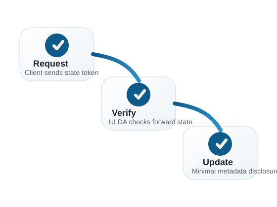

Research goal
To investigate and present an information system approach for stateless authentication in web services with minimal metadata disclosure, supported by ULDA-based cryptographic subject verification.
ULDA Research Workspace
Research topic
Інформаційна система безстанової аутентифікації для вебсервісів з мінімальним розкриттям метаданих. Інформаційне та програмне забезпечення криптографічної перевірки суб'єкта на основі протоколів ULDA.
Academic landing page for a ULDA bachelor thesis workspace focused on stateless authentication, minimal metadata disclosure, and cryptographic subject verification for web services.
The public repository and this landing page present a research-oriented bachelor project workspace. Supporting demo applications are included for exploration and evaluation, but the project is not presented as production-ready software.

The landing page presents the bachelor thesis as a research and prototype effort around ULDA-based state progression, subject verification, and reduced metadata exposure in web-service interactions.
To investigate and present an information system approach for stateless authentication in web services with minimal metadata disclosure, supported by ULDA-based cryptographic subject verification.
The topic is relevant for privacy-aware web systems that need stronger verification mechanisms while reducing unnecessary metadata disclosure and avoiding overreliance on traditional stateful session models.
The work combines protocol-oriented analysis, prototype-oriented software implementation, and repository-based experimentation with ULDA signing, verification, frontend integration, and supporting demo services.
Expected outputs include a documented public repository, prototype components centered on ULDA workflows, and a demonstrable basis for discussing stateless verification with reduced metadata exposure.
packages/ulda-signCore ULDA signing and verification logic most directly related to the bachelor thesis topic.
packages/ulda-frontFrontend integration layer for working with ULDA-backed encrypted records and transport adapters.
applications/example-password-keeperDemonstration application that showcases a user-facing ULDA integration, not the identity of the whole repository.
applications/ulda-crudSupporting MySQL-backed demo server for experiments with ULDA state verification and CRUD-style operations.
applications/max_speed_test_serverSupporting in-memory server used for performance-oriented experiments and verification workflow testing.
Placeholder: the full text of the bachelor thesis will be linked here when available.
This repository is an experimental academic workspace and prototype environment rather than a production-ready system.
Repository maintainer: @iammarguuss
Email: mark@shaposhnik.ch
Format: public GitHub repository for software maintenance coursework and bachelor-thesis presentation.